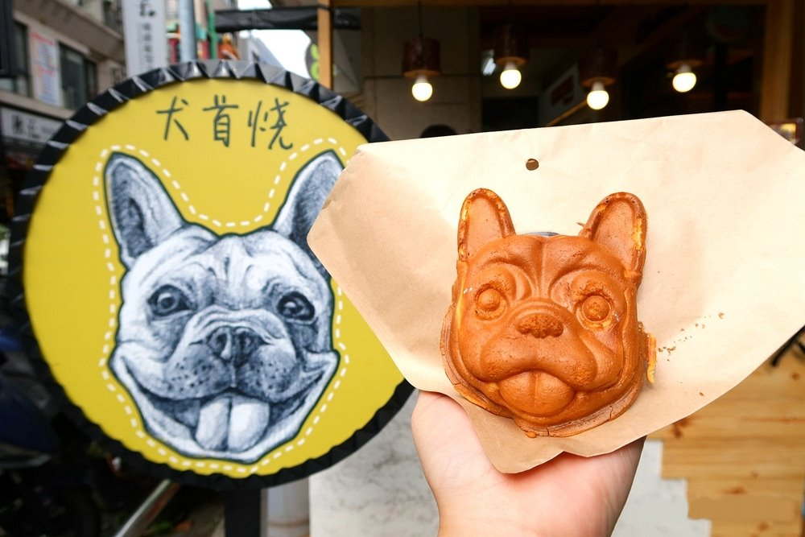
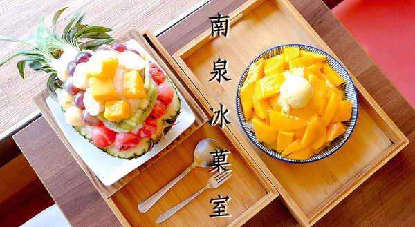

| 台南 | 高雄 | 屏東 |
台南：
說到台南，大家第一個想到的一定是美食，
直覺反應大家應該都會說出虱目魚、牛肉湯、鱔魚麵、碗糕、意麵、蝦捲等，
但這一次要介紹的是當地最近比較著名的美食~
首先! 第一家：犬首燒
這是一家，如果你愛小狗狗就絕對不能錯過的一家店，
這家店有法鬥造型犬首燒 每天只有賣六個小時，限時限量賣200份，
採拿號碼牌取餐的模式，但是只有四種口味，分別是紅豆、地瓜、卡士達、抹茶麻糬等，
尺寸大約是手掌心的大小，蛋糕體富彈性，內餡濕潤，非常好吃。

(圖片來源：https://goo.gl/7Fz32H)
第二家：南泉冰菓室
這一家店位於一個轉角，是一個店面不大的小店，不踏進去其實看不出來其中的魅力，
我們普遍認為的雪糕，在這間店的老闆用多重的口味，顛覆了我們的想像，五彩繽紛的顏色放進眼底，
冰棒吃進嘴哩，如花朵般綻放呢!重點式口味每天都不大一一樣，可以滿足你我每天的好奇心。

(圖片來源：https://goo.gl/YF6oRk)